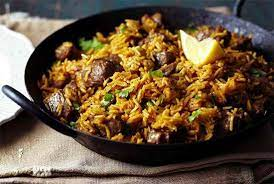

How to cook the delicious Swahili Pilau like a local
Presented by; Johnnie's culinary checkpoint

Ready to start preparing your first pilau dish? I'm sure you're eager to.
This is one of my favourite recipes and it will make for an easy meal with some simple ingredients! Let’s get started!
Overview
The recipe for Pilau Rice is very simple. The rice is cooked in stock with spices and a bit of butter. If you're making this dish for a family gathering, you'll probably want to prepare it a day or two before the party. Then, you can chill it or freeze it to enjoy later. To reheat it, you'll need to use a saucepan and simmer it for 15 minutes.
Plan
- Cooking style: Stir-frying
- Prep Time: 10 minutes minutes
- Cook Time: 20 minutes minutes
- Total Time: 30 minutes minutes
- Calories: 384kcal
Equipment
ingredients
- 2 cups basmati rice
- 3 tbsp cooking oil
- 1 medium onion
- 3 cups chicken broth
- ½ cup coconut milk
- 1 ½ tbsp ginger and garlic paste
- Salt
All crushed and mixed together.
- 2 tbsp pilau masala
- 1 tbsp cloves
- ½ tsp cumin seeds
- ½ tsp black peppercorns
- ¼ cinnamon powder
- ¼ tsp cardamom powder
Instructions
- Heat the cooking oil up in a pot over a medium heat
- Add the onions and rice and stir continuously until the color of the rice starts to change from translucent to white color.
- Add the spices including the ginger and garlic paste and stir for 2 minutes
- In another bowl, mix 2 cups of chicken broth and coconut milk. Pour the mixture into the rice pot and stir softly.
- Cover the pot and cook on low heat, adding the broth gradually to the rice until it is well cooked.
- You can serve this dish with curried meat or with savory dishes.
Tip
It is pretty straightforward to make pilau rice. In essence, you just need to make the stock, then cook the rice in that stock.
The above is a recipe for one person.
Nutrition Value
Serving: 6g | Calories: 384kcal | Carbohydrates: 58g | Protein: 8g | Fat: 13g | Saturated Fat: 5g | Cholesterol: 4mg | Sodium: 538mg | Fiber: 2g | Sugar: 3g
Johnnie's culinary wishes you a happy cooking!